Embark on a retro journey through the iconic adventure game series that has
captivated players for over 35 years. From the original NES classic to modern
masterpieces, explore how Link's legend has evolved across generations.
1980s
The Legend of Zelda
November 21, 1986NES / Famicom Disk Storage
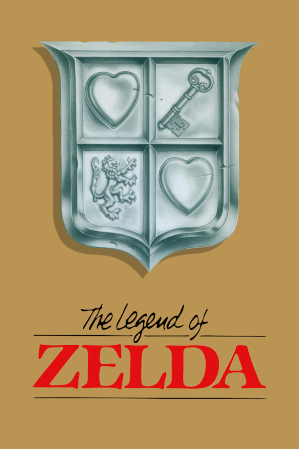
Birth of the adventure genre
The original masterpiece that introduced open-world adventure gaming.
Navigate the Overworld, explore 3D dungeons, and defeat Ganon to save
Princess Zelda and Hyrule.
1990s
Adventure of Link
August 1, 1991NES / Famicom Disk System
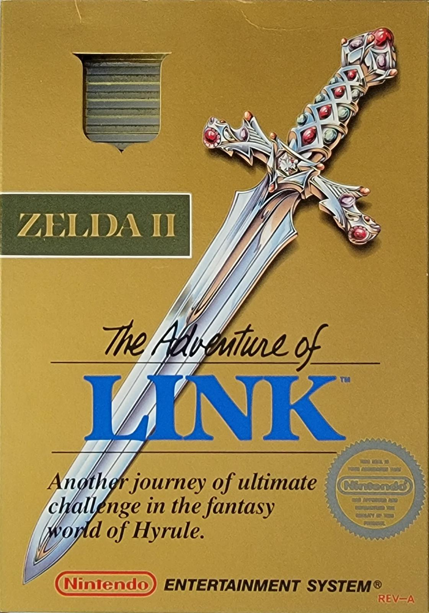
The RPG evolution
A bold departure from the original, featuring RPG elements like
experience points, a separate spell system, and an isometric view.
Often considered the most difficult Zelda title.
Link's Awakening
June 6, 1993Game BoyDream island adventure
Stranded on a mysterious island, Link must rescue the wind from
eight musical instruments. Beautifully translated to the Game Boy
with a dreamlike narrative and charming graphics.
Super Mario Bros. / Zelda: Crossover
1994 (exact day and month not documented) Nintendo Power Famicom Magazine
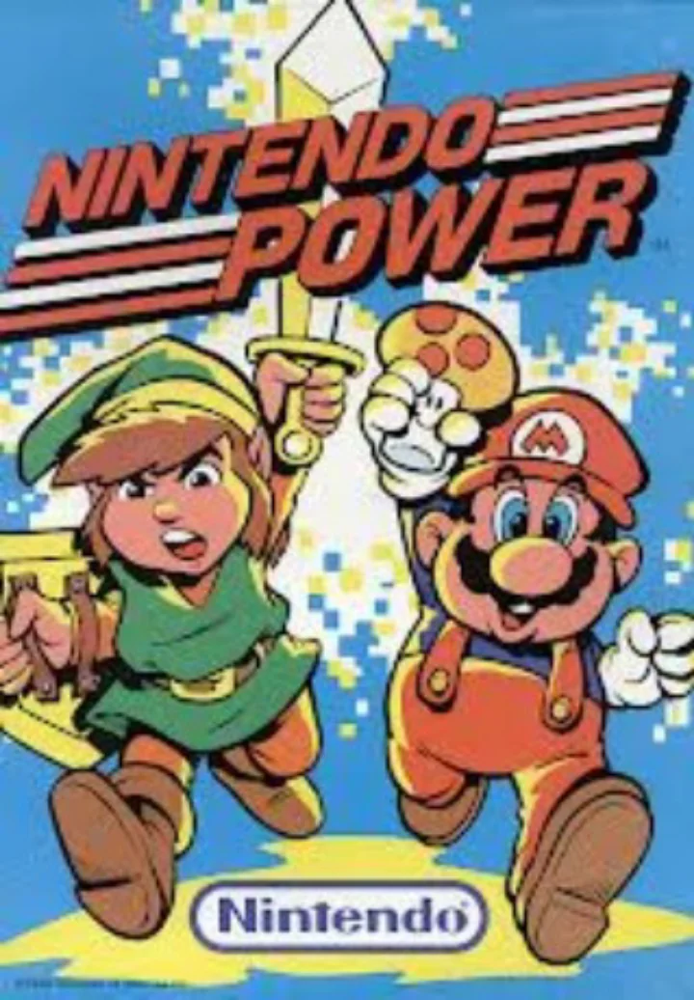
Famicom 6-game collection
Part of the Famicom 6-game collection, this compilation included
the original Zelda, Adventure of Link, and other classics. A rare
collector's item for fans.
Link: The Faces of Evil
October 10, 1993CD-i (Controversial)
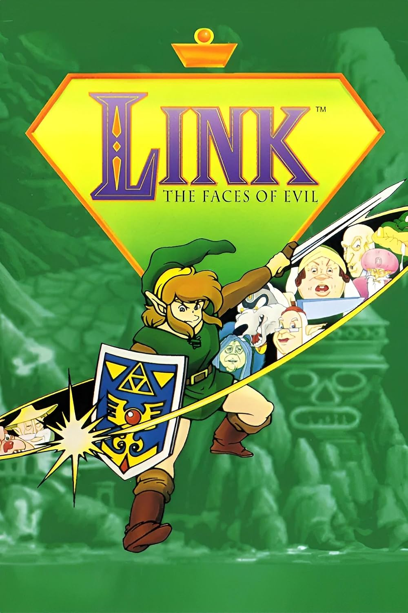
The CD-i anomaly
A controversial adaptation made without Nintendo's direct involvement.
Despite its flaws, it remains a curious footnote in Zelda history
and a sought-after collector's item.
2000s
The Legend of Zelda: Ocarina of Time
November 21, 1998 (JP) / 2000 (Worldwide)Nintendo 643D adventure revolution
The game that defined 3D adventure gaming. Introduced context-sensitive
buttons, lock-on targeting, and cinematic storytelling. Often cited
as one of the greatest games of all time.
The Legend of Zelda: Majora's Mask
July 22, 2000Nintendo 64
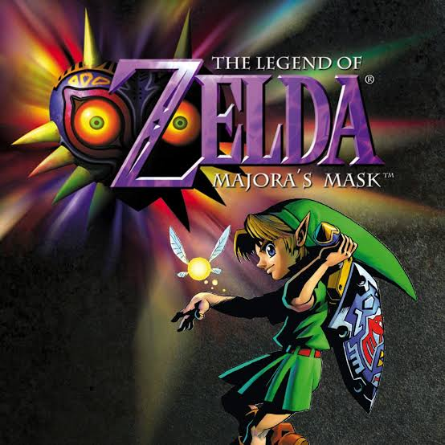
Time-loop masterpiece
A darker, more mature sequel featuring the iconic time-travel
mechanic. The 3-day cycle creates a unique sense of urgency and
depth unmatched in other Zelda titles.
The Legend of Zelda: Ocarina of Time / Master Quest
November 17, 2002GameCube
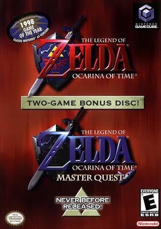
Master Collection
The original Ocarina of Time got a second life on GameCube with
the addition of Master Quest - a mirrored dungeon experience with
redesigned puzzles and increased difficulty.
The Legend of Zelda: Wind Waker
March 24, 2002Nintendo GameCube
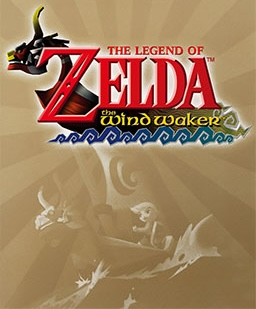
Cartoony masterpiece
A bold artistic choice that shocked fans initially but became
beloved for its charming cel-shaded graphics and expansive ocean
exploration. Revolutionized sailing mechanics in adventure games.
The Legend of Zelda: Four Swords Adventures
November 17, 2002Nintendo GameCube
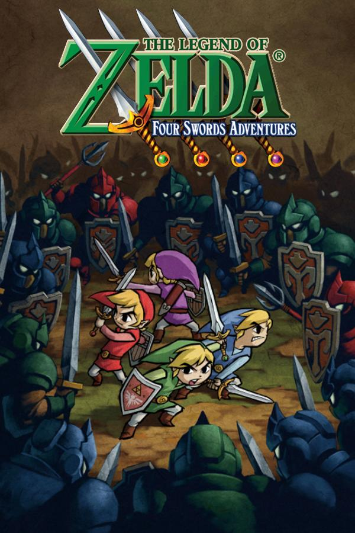
Multiplayer Zelda
The first multiplayer-focused Zelda title, supporting up to four
players. Features both cooperative and competitive modes with unique
gameplay mechanics centered around the Four Swords.
2010s
The Legend of Zelda: Skyward Sword
November 20, 2011WiiThe origin story
The chronological prequel that explains the origins of Zelda,
Link, and the sword that bears her name. Utilized motion controls
for swordplay and introduced the Birdoo companion.
The Legend of Zelda: Skyward Sword (HD)
July 15, 2023Nintendo Switch
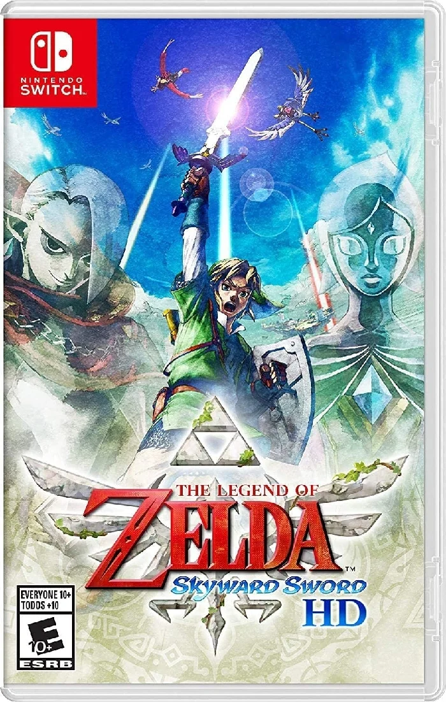
HD Remaster
A completely remastered version with improved graphics,
refined motion controls, and additional content. Features
an expanded Adventure Log and new fast-travel options.
The Legend of Zelda: A Link Between Worlds
November 22, 2013Nintendo 3DS
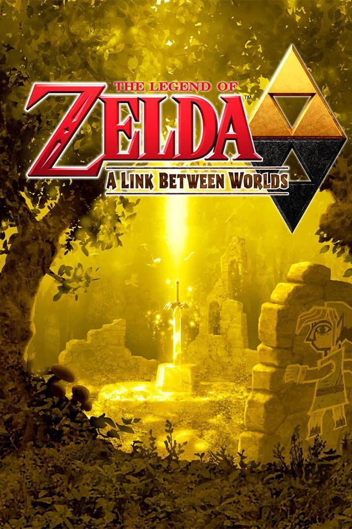
Yoshi's Island influence
A spiritual successor to Link's Awakening, blending classic
Zelda mechanics with innovative wall-merging abilities. Features
a non-linear progression system and the iconic Yoshi-inspired art style.
The Legend of Zelda: Tri Force Heroes
October 23, 2015Nintendo 3DS
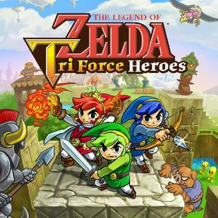
Co-op trio adventure
A multiplayer-focused adventure where three Links work together
to solve puzzles. Built on the A Link Between Worlds engine with
a uniquetriangular visual style.
The Legend of Zelda: Breath of the Wild
March 3, 2017Nintendo Switch / Wii U
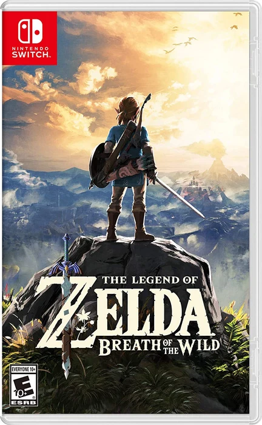
Open world redefined
The game that redefined open-world gaming. Features unprecedented
player freedom, physics-based gameplay, and a broken Hyrule waiting
to be explored. Won Game of the Year awards across multiple outlets.
The Legend of Zelda: Link's Awakening
September 20, 2019Nintendo Switch
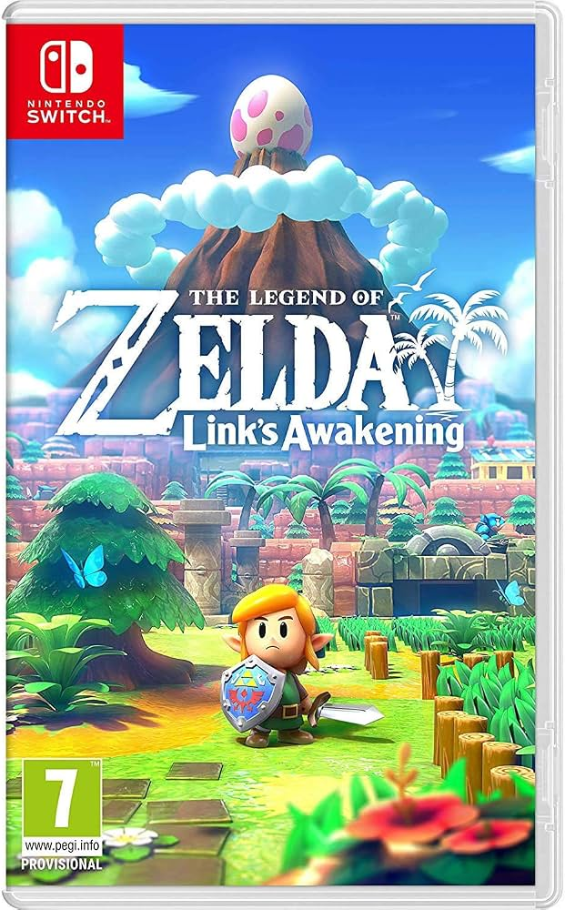
Dream Remake
A complete visual overhaul of the Game Boy classic, featuring
a charming claymation style. Includes a new dungeon, photography
mode, and modern quality-of-life improvements.
The Legend of Zelda: Tears of the Kingdom
May 12, 2023Nintendo SwitchUltrahand & Ascend
The triumphant sequel to Breath of the Wild, introducing
powerful new abilities like Ultrahand, Ascend, and Fuse.
Takes place in the Sky Islands above Hyrule.
The Legend of Zelda: Echoes of Wisdom
September 26, 2024Nintendo Switch
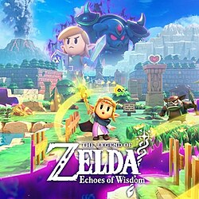
Zelda's first starring adventure
Princess Zelda takes the lead in a top-down adventure where the
mysterious Tri Rod can create echoes of objects and enemies. Use
clever copies to solve puzzles, explore Hyrule, and rescue Link.